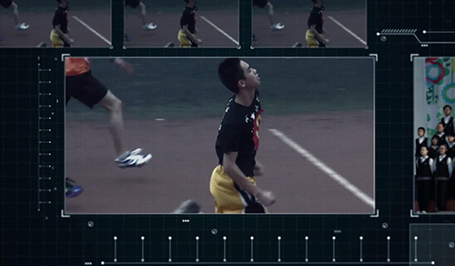

《八班那些事》于2015年4月公映电影基于Edius进行剪辑，使用Video Studio进行特效制作，它代表了当时CHOSER STUDIO的最高制片水准。
EDIUS非线性编辑软件专为广播和后期制作环境而设计，特别针对新闻记者、无带化视频制播和存储，它拥有完善的基于文件工作流程，提供了实时、多轨道、多格式混编、合成、色键、字幕和时间线输出功能。
Video Studio是一款功能强大的视频编辑软件，具有图像抓取和编修功能，可以抓取，转换MV、DV、V8、TV和实时记录抓取画面文件，并提供有超过100 多种的编制功能与效果，可导出多种常见的视频格式，甚至可以直接制作成DVD和VCD光盘。
《八班：ECML》为CHOSER STUDIO 2016年度巨制，首次采用Adobe After Effect和Adobe Premiere Pro等专业软件进行视频剪辑和特效制作，相比Video Studio和Edius制作效率提高至少3倍。
本次微电影首次引进3D技术，配合AE插件Element 3D制作，使"CLASS 8 2014" Logo的质量较上一部电影有巨大的提升。

乾森画质/特效增强技术是CHOSER STUDIO最新推出的视频特效增强技术，配合Red Giant等插件的支持，利用成熟的运动追踪和基础抠像技术，使我们能随心所欲地对影片画质进行调整。
如右图，基于钱森画质/特效增强技术，能将明亮的房间素材调整成为暗室效果，借助动态追踪技术添加上的HUD高科技动态元素平视显示器，使之能够完全与场景相融合。
